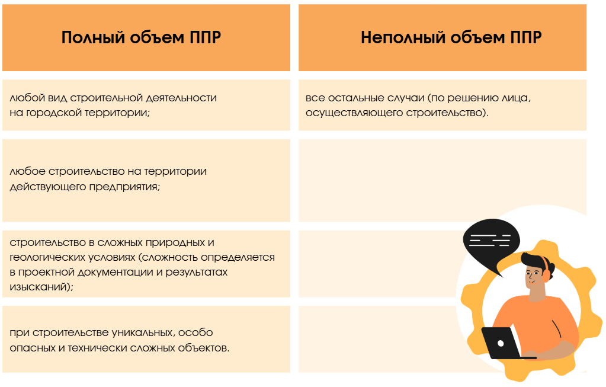

Учимся составлять ППР по правилам
В этом курсе научитесь грамотно составлять проект производства работ. Эксперт курса даст ценные советы и полезные рекомендации, которые вы сразу сможете использовать на практике.

На этом уроке разберем основные правила разработки проекта производства работ (ППР). Вы поймете, в каких случаях ППР обязателен и кто отвечает за его разработку, а также научитесь согласовывать и утверждать ППР, чтобы избежать проблем на стройке.
Перед началом урока давайте проверим ваши текущие знания по теме урока. Не переживайте, если не знаете ответ, вы всегда можете обратиться к подсказкам внутри теста.
Теперь перейдем к содержанию урока. Начнем с определения, что такое проект производства работ.
Проект производства работ (далее – ППР) – это организационно-технологический документ, который описывает применяемые организационно-технологические решения для обеспечения оптимальной технологичности и безопасности производства работ, а также экономической эффективности капитальных вложений.
Проект производства работ разрабатывается до начала производства работ и относится к разрешительной документации.
Когда требуется разработка ППР
Проект производства работ требуется разрабатывать (в соответствии с СП 48.13330.2019 п. 6.3):
- на объектах, для которых требуется разрешение на строительство (реконструкцию) (в соответствии с п. 5 ст. 51 ГрК РФ);
- по требованию застройщика (технического заказчика);
- если установлено договором.
Кто имеет право на разработку ППР
Обязанность по разработке лежит на лице, осуществляющем строительство. Специальной лицензии или наличия членства в СРО у организации-разработчика не требуется (так как ППР не относится к проектной документации). Для разработчика могут потребовать аттестацию в Ростехнадзоре (если в ППР используются подъемные сооружения).
Кто утверждает и согласовывает ППР
ППР утверждается руководителем и ответственным специалистом по организации строительства лица, осуществляющего строительство. Если ППР оформляется субподрядчиком, то он утверждается руководителем организации, выполняющей работы по данному ППР, по согласованию с генеральной подрядной организацией.
ППР согласовывается со всеми заинтересованными лицами и службами – застройщиком (техническим заказчиком), лицом, осуществляющим подготовку проектной документации, эксплуатирующей организацией и т.д.
Проект производства работ, разработанный на выполнение работ на территории действующего предприятия, должен быть согласован с эксплуатирующей его организацией. Проект производства демонтажных работ должен быть согласован с лицом, осуществляющим подготовку проектной документации.
Проект производства работ разрабатывается на:
- на возведение объекта в целом (один комплексный ППР на все виды работ),
- на составные части объекта (подземная и надземная части, секция, пролет, этаж, ярус и т.п.),
- на отдельные виды работ (ППР на земляные работы, ППР на монолитные работы, ППР на устройство кровли и пр.).
В соответствии с СП 48.13330.2019 ППР может разрабатываться в полном или неполном объеме.

Теперь вы знаете, что такое ППР, из чего он состоит, и какие основные требования предъявляются к разработчику ППР. Переходите к следующему уроку, на котором вместе с экспертом Школы научитесь составлять другой важный для работы документ – строительный генеральный план (СГП).